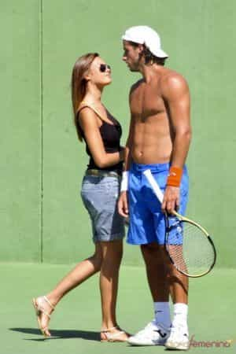
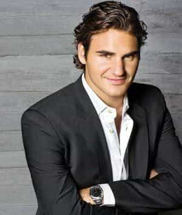

Mr. Luthra is an author and artist who writes about news, fitness, culture, and anything else that meets his interests. If you like his style, visit The Straightforward Voice, where you can find more FREE content.


What was once a very popular sport now is primarily for a focused crowd. However, in this day and age, tennis may very well be the best sport for masculinity, prestige, and respect. For aspiring players, it offers many additional benefits whether you’re a pro or play for recreation.
Rafael Nadal, one of fittest players on tour.
The sport requires strength, speed, and a strong will. Half the game is mental. Fat guys get blown off the court, as they should.
At the pro level you see wiry ripped guys with low body fat and abs. Girls prefer that look over the dumbbell bodybuilder posterior, smart girls that is. It’s evolved from the old school days and so today the top guys are incredibly fit. Just check out Nada’s arms. Andre Agassi was benching over 300lbs at the end of his career and players today continue to push the fitness level.
Even in college, the clubs have tall fit guys. One guy I knew could double curl 70 pound dumbbells for five reps. Tell me how many jocks can do that? He had a mean serve and wicked forehand.
Some think it’s a wimpy sport for skinny guys, but you see that in every sport at the amateur level. A lot of pro players previously played or simultaneously played other “manly” sports like football (soccer), cricket, baseball, and alike. Since everybody views Russia as the top manufacturer of men, you should know that many Russians, Serbians, and other Eastern Europeans are on the pro tour. The number of American, Australian, and other western nationalities on tour has drastically declined, and is almost non-existent these days, at least on the men’s side.

Players at my school’s club were muscular, which naturally attracted attention. The club’s treasurer got a lot of girls of all kinds, and he was Asian. There were others who were into anime, but because they were fit, it didn’t matter. There was even a skinny kid who got girls.
Most clubs or tennis communities also have mixed doubles which pair you up. It works well for dates, as girls usually are more open to trying tennis compared to other sports and it helps to break the ice.
Generally speaking, professional players get QUALITY girls while cage fighters and ballers hook up with pornstars and gold diggers.

Learning to be aggressive on court carries over to everything else. One guy I knew moved up in a big-name bank, and now is in a high position in government and married. Another became an engineer. This is not to say all who wield a racquet are destined to become professionals, but it’s not uncommon to encounter such people in the tennis world.
Unlike other sports, tennis truly is the independent man’s sport. If you lose, you have no one to blame but yourself. You learn how to keep it together during tough matches, and to grind it out when you’re down which is useful in life. It really tests the will and what you’re made of. You’re on your own and there’s no one to save you. If you’re on the pro tour, you have to earn every dollar you get. No twenty million dollar contracts in this sport.
It’s a classy sport well loved by powerful and successful people. Donald Trump and others have been spotted at the crowds. Roger Federer is known to roll out in style, as do many others.
Every now and then you see a football idiot punch out his girl or some drug bust. Not common in tennis players. Sure, there were a few incidents, but usually the worst you’ll see is John McEnroe’s anger tantrums, but even that’s changed. If there are any girlfriend or divorce troubles, it’s usually incognito without much attention, which brings us to the next point.
Pro Tennis players deal with media much unless they want to compared to other sports. Nikolay Davydenko rose up to the top 10 inconspicuous without a peep. The men and women pretty much do their own thing.

Players travel extensively, competing in exotic places all over. From New York, Miami, Dubai, Indian Wells, Melbourne, and Rome, players tour the best. You don’t even have to be a top player. Many low scale pro league tournaments exist year round, although they are not covered on mainstream television. They may not pay millions, but winning multiple events the prize money adds up. You also get paid for just making the higher rounds.
You’ll live longer, happier, and with minor bruises. There’s this obsession in society today with proving yourself a man by mindlessly getting into fights or reckless behavior. What does that prove?
Civilization evolved to preserve peace and men fought so they could get away from violence. Nobody likes fighting, at least not for long. The British had the best military with real men at one point in time and created tennis for peaceful recreation. Rugby was about as dirty as they’d get.
While you don’t have become a pro, taking up tennis can be a fun complement to your fitness routine. Even famous muscle builder Charles Atlas integrated it as part of his exercise regime. You’ll get some sun, breathe the fresh air, and get out of the house.
Read More: Women’s Tennis Demands Heat Breaks Not Given To Men At Wimbledon Championships